OK3576-C_Android14.0_User’s Manual_V1.0
Document classification: □ Top secret □ Secret □ Internal information ■ Open
Copyright
The copyright of this manual belongs to Baoding Folinx Embedded Technology Co., Ltd. Without the written permission of our company, no organizations or individuals have the right to copy, distribute, or reproduce any part of this manual in any form, and violators will be held legally responsible.
Forlinx adheres to copyrights of all graphics and texts used in all publications in original or license-free forms.
The drivers and utilities used for the components are subject to the copyrights of the respective manufacturers. The license conditions of the respective manufacturer are to be adhered to. Related license expenses for the operating system and applications should be calculated/declared separately by the related party or its representatives.
Overview
This manual is designed to help you quickly familiarize yourself with the product, and understand the interface functions and testing methods. It primarily covers the testing of interface functions on the development board, the methods for flashing images, and troubleshooting procedures for common issues encountered in use. During the testing process, some commands are annotated for easy understanding, focusing on practicality and sufficiency. Please refer to OK3576-C_Android14 User’s Compilation Manual provided by Forlinx for kernel compilation, related application compilation methods, development environment construction, etc.
There are total five chapters:
Chapter 1. focuses on the overall overview of the product, and briefly introduces the development board in the interface resources, the relevant driver path in the kernel source code, and the description of the key parts;
Chapter 2. mainly focuses on the fast startup of the product, which can be achieved through two methods: serial port login and, as well as the relevant introduction of the U-Boot menu;
Chapter 3. Android function test；
Chapter 4. focuses on the product’s image update, mainly describing the method of updating the image to the storage device, and users can choose the corresponding flashing method according to the actual situation.
Chapter 5. is mainly about the OTA upgrade test of the product system.
A description of some of the symbols and formats associated with this manual:
Format |
Meaning |
|---|---|
Note |
Note or information that requires special attention, be sure to read carefully |
üìö |
Relevant notes on the test chapters |
Ô∏èüõ§Ô∏èÔ∏èÔ∏èÔ∏è |
Indicates the related path. |
Blue on gray |
Refers to commands entered at the command line(Manual input required). |
Black font on gray background |
Serial port output message after entering a command |
Bold black on gray background |
Key information in the serial port output message |
// |
Interpretation of input instructions or output information |
Username@Hostname |
console: development board serial port login account information, through which the user can determine the environment for function operation. |
Example: Check the loading status of the NXP AW9098 module driver:
forlinx@ubuntu:~/3576$ ls //List the files in this directory
OK3576-android-source OK3576-android-source.tar.bz2
forlinx@ubuntu: the username is forlinx and the hostname is ubuntu, indicating that the operation is performed in the development environment ubuntu.
// : Interpretation of command operations or printed information without input.
ls：Blue font on a gray background, indicating the relevant commands that need to be manually entered.
OK3576-android-source：The black font with gray background is the output information after the input command, and the bold font is the key information, which indicates that the NXP AW9098 module driver has been loaded.
Application Scope
This manual is mainly applicable to the Android14 operating system on the Forlinx OK3576-C platform. Other platforms can also refer to it, but there will be differences between different platforms. Please make modifications according to the actual conditions.
Materials Description
OK3576-C development board currently provides software documentation for the Android operating system. This document serves as a user manual for Android users and includes relevant functionality testing and explanations for the Android 11 kernel. Users should select the corresponding documentation that matches the image on the development board for their operations. Users can access the documentation and source code of the software and hardware through the web link provided by our company.
Please ask your sales representative for the download link.
Note: OK3576-C development board is initially flashed with a Linux system at the factory. You need to re-flash the board with an Android image before performing operations.
Instructions for flashing the Android system can be found in the “System Flashing” Chapter. After flashing, you can view kernel version information using the steps outlined in the “Serial Port Login” section.
For detailed information, refer to the OK3576-C user manual. In this document, the directory where the user manual is located is taken as the root directory of the OK3576-C user manual.
Revision History
Date |
Manual Version |
SoM Version |
Carrier Board Version |
Revision History |
|---|---|---|---|---|
08/11/2024 |
V1.0 |
V1.0 |
V1.0 and Above |
OK3576-C_Android14_User’s Manual Initial Version |
1. OK3576 Development Board Description
1.1 OK3576 Development Board Description
RK3576 processor, based on ARM64 architecture, is known for its low power consumption and high performance. It integrates 4 Cortex-A53 and 4 Cortex-A72 cores, along with dedicated NEON co-processor and NPU for neural network processing. It’s widely used in various fields such as computers, smartphones, and digital multimedia devices.
The connection between SoM and the carrier board is board-to-board.
When the 2GB OK3576-C runs the full Android 14 system, the remaining memory is less than 100MB. It is recommended that users tailor the system services according to the application scenarios, otherwise the memory may be insufficient.
Note: Hardware parameters are no longer described in this software manual. Before referring to this manual for software development, please read the “OK3576-C Hardware Manual” (download in the same way as the software information) to understand the product naming rules and the hardware configuration information of the product you are using, which will help you to use this product.
1.2 Android14 System Software Resources Features
Device |
Location of driver source code in the kernel |
Device Name |
|---|---|---|
LCD Backlight Driver |
drivers/video/backlight/pwm_bl.c |
/sys/class/backlight |
USB Port |
drivers/usb/storage/ |
|
USB Mouse |
drivers/hid/usbhid/ |
/dev/input/mice |
Ethernet |
drivers/net/ethernet/stmicro/stmmac |
|
SD/micro TF card driver |
drivers/mmc/host/dw_mmc-rockchip.c |
/dev/block/mmcblk1pX |
EMMC Driver |
drivers/mmc/host/dw_mmc-rockchip.c |
/dev/block/mmcblk2pX |
OV13850 |
drivers/media/i2c/ov13850.c |
/dev/videoX |
LCD Controller |
drivers/gpu/drm/rockchip/rockchip_drm_vop.c |
|
MIPI CSI |
drivers/phy/rockchip/phy-rockchip-mipi-rx.c |
|
MIPI DSI |
drivers/phy/rockchip/phy-rockchip-inno-mipi-dphy.c |
|
LCD Touch Driver |
drivers/input/touchscreen/gt9xx/*drivers/input/touchscreen/edt-ft5x06.c |
/dev/input/eventX |
RTC Real Time Clock Driver |
drivers/rtc/rtc-rx8010.cdrivers/rtc/rtc-pcf8563.c |
/dev/rtc0 |
serial port |
drivers/tty/serial/8250/8250_dw.c |
/dev/ttySX |
Key Driver |
drivers/input/keyboard/adc-keys.c |
/dev/input/eventX |
LED |
drivers/leds/leds-gpio.c |
|
I2S |
sound/soc/rockchip/rockchip_i2s.c |
|
Audio Driver |
sound/soc/codecs/rk817_codec.c |
/dev/snd/ |
PMIC |
drivers/mfd/rk808.c |
|
PCIE |
drivers/pci/controller/pcie-rockchip.c |
|
Watchdog |
drivers/watchdog/dw_wdt.c |
|
SPI |
drivers/spi/spi-rockchip.c |
|
PWM |
drivers/video/backlight/pwm_bl.c |
1.3 EMMC Memory Partition Table
The following table is the eMMC memory partition information of Android operating system (the size of a block is 512bit when calculating):
Partition Index |
Name |
Offset / block |
Size/block |
Content |
|---|---|---|---|---|
N/A |
security |
0x00000000 |
0x00004000 |
MiniLoaderAll.bin |
1 |
uboot |
0x00004000 |
0x00002000 |
uboot.img |
2 |
misc |
0x00008000 |
0x00002000 |
misc.img |
3 |
dtbo |
0x0000a000 |
0x00002000 |
dtbo.img |
4 |
vbmeta |
0x0000c000 |
0x00000800 |
vbmeta.img |
5 |
boot |
0x0000c800 |
0x00020000 |
boot.img |
6 |
recovery |
0x0002c800 |
0x00030000 |
recovery.img |
7 |
baseparameter |
0x001fcc00 |
0x00000800 |
baseparameter.img |
8 |
super |
0x001fd400 |
super.img |
2. Fast Startup
2.1 Preparation Before Startup
OK3576 development board has two system login modes: Serial login and hardware preparation before system startup:
12V2A or 12V3A DC Power Cable
Debugging Serial Cable (Serial Login Use)
The debug serial port on the development board is a Type-C socket, allowing users to connect the development board to a PC using a USB to Type-C cable to monitor the status of the development board.
2.2 Debugging Serial Driver Installation
OK3576 platform utilizes a Type-C interface for the debug serial port (labeled DEBUG on the baseboard). It features an on-board USB-to-UART chip, eliminating the need for customers to purchase a USB-to-serial debug tool. The setup is extremely simple and convenient, but requires installation of the serial port driver. Functions such as Adb and flashing are realized through the Type-C interface (carrier board screen printing TypeC), and OTG related drivers need to be installed.
Serial driver file 3-Tool \ CP210x _ Windows _ Drivers. Zip.
OTG related driver “3-Tool \ DriverAssitant _ v5.13.zip”
2.3 Serial Login
2.3.1 Serial Port Connection Settings
Description:
Serial port terminal login user: serial port terminal automatically logs in root user without password;
Serial port settings: baud rate 115200, data bit 8, stop bit 1, no parity bit, no flow；
Hardware: Type-C cable for connecting PC to development board;
Software: Windows PC requires Super Terminal; choose a familiar serial terminal software.
In the following, take the putty terminal software as an example to introduce the serial port login method:
Step 1: Connect the serial port number of the computer—check the serial port number from the device manager (Based on the port actually recognized by the computer ).

Step 2: Open and set up putty, then set the“ line according to the COM port of the computer used, baud rate 115200.
Step 3: After the setting, input the COM port used by the computer in Saved Sessions. The following figure takes COM24 as an example, save the settings, open the serial port again later, and click on the saved port number.
2.3.2 Serial Login
After the terminal software on the PC side is set, connect the PC and the development board through the serial port cable, and power on after connecting the power supply. The startup information can be seen through the terminal software.
2.5 System Shutdown
In general, the power can be turned off directly, if there is data storage, function use and other operations, do not arbitrarily disconnect the power during the operation, in order to prevent irreversible damage to the file, you can only re-burn the firmware. To ensure that data is not completely written, enter the sync command to complete data synchronization before turning off the power.
Turn off the Android system, press the “PWRON” and “V +” buttons at the same time, or press “PWRON” for a long time and click “Shut down”.
Press and hold “PWRON” for 6 seconds to force power off.
Note: For products designed based on the SoM, if there are scenarios where accidental power loss causes the system to shut down unexpectedly, measures such as adding power-loss protection can be incorporated into the design.
3. Android Function Use and Test
3.1 Main Interface Display
3.2 Application Drawer
Swipe up on the main screen to bring up the following screen.
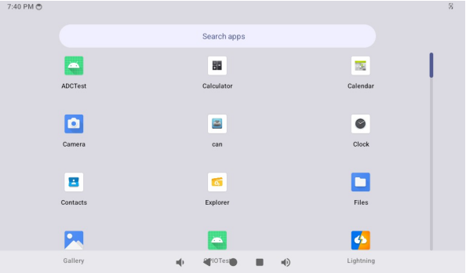
Note: After software version updates, there may be minor differences, which do not represent the actual images for each subsequent version update and are provided for reference only.
3.3 Language Settings
Open the “Settings” app in the application drawer interface and click “System”.
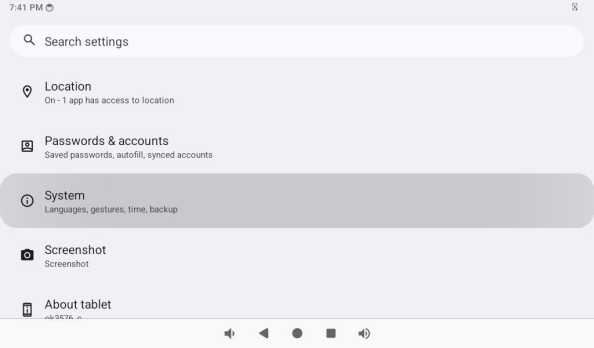
Click “Language” to enter the language setting interface.
Here you can select the language you want to set.
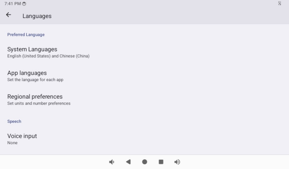
3.4 Picture and Audio View
Store the picture and video files to be viewed into the TF card, and insert the TF card into the development board.
Open the Gallery app in the App Drawer interface
Configure permissions:
3.5 Audio Test
Store the audio file to be played into the TF card, and insert the TF card into the development board.
Open the Music app in the App Drawer interface.
Click “Song” in the interface to enter the song list interface.
Click Play Music to enter the play interface.
The volume can be adjusted by pressing the physical buttons VOL + and VOL- on the carrier board of the board.
3.6 Recording (Mic input Support)
Open the Recorder app in the App Drawer interface.
Click the round button to start recording:
Note: the pointer will swing according to the sound level during normal recording.
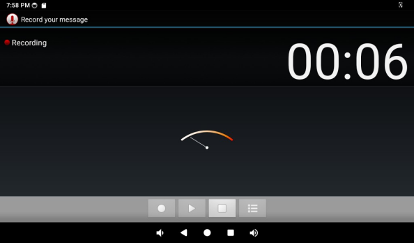
Click the “square button” to stop recording, and finally click the “save” button to save.
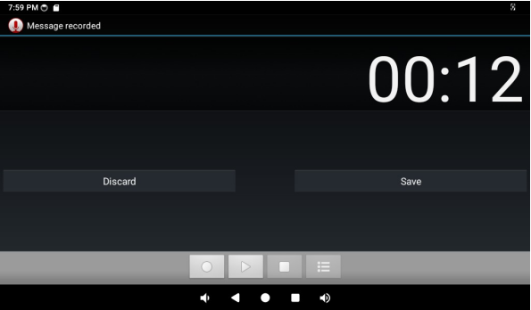
Click the “” button below to display the previously recorded audio file.
Click on the audio file you want to play, and the recording will start playing.
3.7 Volume Adjustment
Open the “Settings” app in the application drawer interface, and click “Tone and Vibration” to enter the volume setting interface.
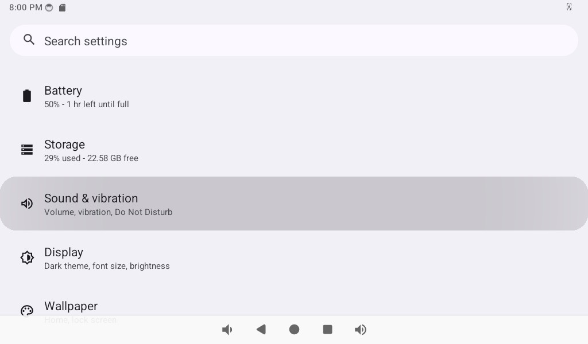
This interface allows you to adjust each section’s volume and supports media volume adjustment using the physical buttons VOL- and VOL+ on the carrier board.
3.8 Display Settings
Open the “Settings” app in the application drawer interface, and click “Display” to enter the display settings interface.

Click “brightness” to adjust the brightness of mipi screen.

The default setting of OK3576 is to never turn off the screen. If you need to turn off the screen automatically, please click the “Screen timeout” option and select the time.
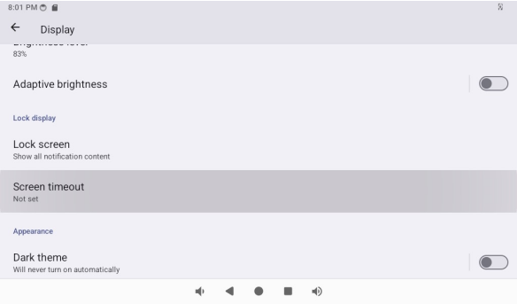
If there is no operation on the interface within the set timeout period, the screen will enter the sleep mode. Short press of the “PWRON” button on the carrier board will wake up the screen.
3.9 Time Settings（RTC）
Open the “Settings” app in the application drawer interface and click “System”.
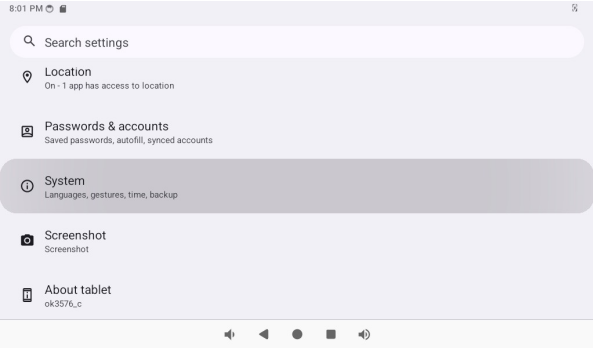
Click on “Date &Time.”
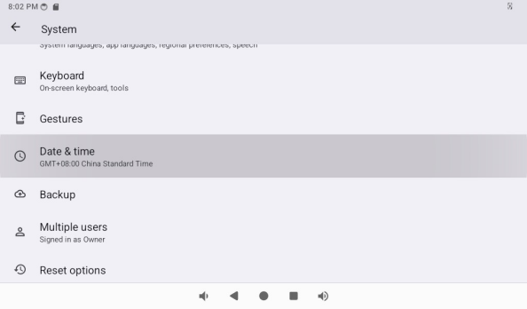
Turn off Auto Time to use the RTC time, where the date and time can be changed and the time can be synchronized after you power down (make sure you have a coin battery installed).
3.10 Ethernet Test
OK3576 has 2 x Gigabit NIC (Ethernet ETH0 and Ethernet ETH1) on board, which can be expanded by pcie.
Note: Network priority: Ethernet > wifi > mobile network
After inserting the network cable, open the “Settings” app in the application drawer interface and click “Network and Internet”.
Click “Ethernet”:
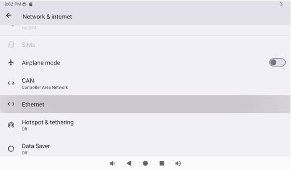
The default method for obtaining an IP address is “dhcp.”
If you want to set a static IP address, click “EthernetIp mode” “and select” static “to set a static IP address. Only IPV4 is supported.
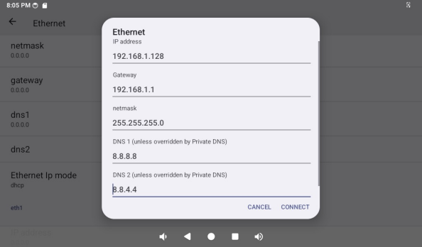
Click CONNECT to complete the configuration:
After successful connection, open the “Lightning” app in the app drawer interface.
Test the network by entering the www.forlinx.net in the address bar.

3.11 WiFi Test
Note: Network priority: Ethernet > wifi > mobile network. Unplug the network cable when testing the WiFi.
Open the “Settings” app in the app drawer and click “Network and Internet”.
Click on “Internet”.
Turn on the “WLAN” switch, select ssid, and enter the password.
After successful connection, open the “Lightning” app in the app drawer interface.
Test the network by entering the www.forlinx.net in the address bar
3.12 WiFi Hotspot Test
OK3576 supports the sharing of Ethernet or mobile networks through WIFI for WIFI hotspot testing. First, connect the network cable to ensure that the Ethernet can be connected normally.
Open the “Settings” app in the app drawer and click “Network and Internet”.
Click “Hotspot &tethering”:
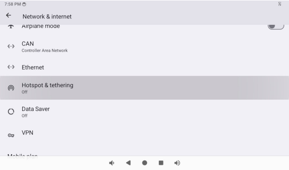
Click WLAN Hotspot:
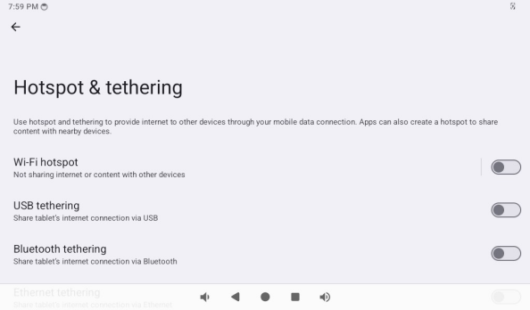
Enable the WLAN hotspot and set the hot spot name and password:
After connecting to the hotspot through the mobile phone, you can surf the Internet normally.
3.13 4G/5G Module Test
Note: Network priority: Ethernet > wifi > mobile network. When using the 4G module, dial the S2 to ON.
The OK3576 carrier board supports 4G modules (EM05) and 5G modules (RM500U). Before the test, please power off the development board, connect the 4G/5G module and insert the SIM card (pay attention to the direction of the SIM card), and start the development board.
Open the “Settings” app in the app drawer and click “Network and Internet”.
Now you can see that you have successfully connected to China Unicom.
After successful connection, open the “Lighting” app in the app drawer interface.
Test the network by entering the www.forlinx.net in the address bar.

3.14 Bluetooth Test
Description: The current system does not support iPhone Bluetooth connection.
The WiFi & Bluetooth integrated module is used in the Bluetooth function test of OK3576 platform, which supports the connection of Bluetooth devices as the main device.
Use the Bluetooth mouse to test, and the test method is as follows:
Open the “Settings” app in the app drawer interface and click “Connected Devices”.
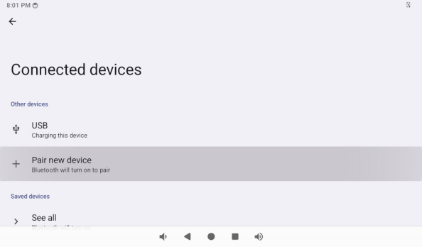
Tap “Pair with new device” and turn on Bluetooth mouse pairing mode.
Click the device corresponding to the Bluetooth mouse.

Click “Match”.
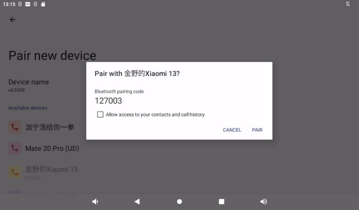
Successful connection, mouse pointer appears on desktop.
3.15 Key Test (Sleep Wake-up)
There are 8 keys on the development board, including VOL +, VOL-, MENU, ESC, HOME, PWRON, RESET and Maskroom.
Key |
Function |
|---|---|
Recovery/VOL+ |
VOL+ |
VOL- |
VOL- |
PWRON |
Wake up from sleep and power on/off |
Maskroom |
Work with RESET to enter maskrom mode. |
RESET |
RESET |
MENU |
Pop-up menu Home screen settings, Widget, Wallpaper |
ESC |
Return |
The default factory setting is no automatic hibernation. At this time, press the PWRON key lightly to turn off the screen and enter the hibernation state (note that the carrier board cannot be inserted into a wake-up source such as USBOTG, cpu4-7 is turned off, and cpu0-3 is still working). The hibernation print information is as follows:
console:/ # [ 561.621862][ T179] edt_ft5x06 2-0038: Unable to fetch data, error: -6
[ 561.631701][ T322] rockchip-vop2 27d00000.vop: [drm:vop2_crtc_atomic_disable] Crtc atomic disable vp1
[ 561.687288][ T322] [WLAN_RFKILL]: wlan_early_suspend :enter
[ 561.694304][ T164] psci: CPU4 killed (polled 4 ms)
[ 561.709159][ T164] psci: CPU5 killed (polled 0 ms)
[ 561.718567][ T164] psci: CPU6 killed (polled 0 ms)
[ 561.734553][ T164] psci: CPU7 killed (polled 0 ms)
At this time, cpu0-3 is still working, and cpu4-7 is closed.
console:/ # cat /sys/devices/system/cpu/online
0-3
console:/ # cat /sys/devices/system/cpu/offline
4-7
console:/ #
In the sleep state, press the PWRON key again to wake up the CPU. Press and hold PWRON to shut down the device
The other buttons have simpler functions, so please test them yourself.
3.16 TF Card and USB Storage Test
This test is a test of TF card and USB storage device. The following steps take TF card as an example.
Open the “Settings” app in the application drawer interface and click “Storage” to view the internal storage device and the inserted storage device:
Select TF card.
Click the “File” to manage the files:
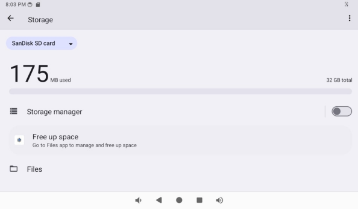
3.17 USB Mouse Test
After the system is running, insert the USB mouse on the USB host, you will see the mouse pointer in the interface, and you can operate the Android system through the mouse.
3.18 USB OTG Interface Test
The OK3576 development board supports USB OTG functionality.
The Typec of the development board is connected to the computer, and the computer will recognize the board as follows:

Open the “Settings” app in the app drawer interface and click “Connected Devices”.
Click “USB“.
Click “File Transfer”.
Open “This PC” on your computer, and you will see “ok3576_c”. This allows file transfer via the computer.
3.19 Serial Port Test
OK3576 platform carrier board schematic indicates the breakout of UART0, UART4, UART5, UART6, and UART8, totaling 5 serial ports. Among them, UART0 is the debug port, UART4 is the Bluetooth port, UART5 and UART6 are 485 ports, and UART8 is a TTL port.
UART |
Device Nodes |
Description |
|---|---|---|
UART0 |
Debugging serial port cannot be used directly for this test. |
|
UART4 |
/dev/ttyS4 |
It is used for Bluetooth and is not separately pinned out and can’t be directly used for this test. |
UART5 |
/dev/ttyS5 |
RS485 |
UART6 |
/dev/ttyS6 |
RS485 |
UART8 |
/dev/ttyS8 |
TTL |
Testing will use two RS485 ports, UART5 and UART6. Before testing, ensure proper connection of the two RS485 interfaces: connect A to A and B to B. The two RS485 carrier board interfaces are as follows:
Open the “SerialPortTest” app “in the application drawer and click the” Setup “button
Set Device to ttyS5.
Set the Baud rate “to 115200.
Set Display format “to char.
Click the “CONSOLE” option in the previous menu to perform the send-receive test:
Open ttyS6 in the command line terminal to send data;
console:/ # stty -F /dev/ttyS6 raw speed 115200
115200
console:/ # echo 123 > /dev/ttyS6
console:/ #
At this time, app receives data from ttyS6, as shown in the figure;
Open ttyS6 in the command line terminal to receive data;
console:/ # stty -F /dev/ttyS6 raw speed 115200
115200
console:/ # cat /dev/ttyS6
Enter the data to be sent in the Emission textbox in the app, and click Send, as shown in the figure below;

Data from ttyS5 can be received in the command line terminal.
console:/ # stty -F /dev/ttyS6 raw speed 115200
115200
console:/ # cat /dev/ttyS6
qwer
3.20 Camera Test
Currently supports OV13855 (connects to CAM1 interface), OV5645 (connects to CAM2, CAM3, CAM4, CAM5), UVC camera (connects to USB interface).
Open the “Camera” app in the application drawer interface and configure the relevant permissions.
Preview Interface.
The preview interface slides to the right, and you can choose to take photos or videos.
Slide left in the preview interface and click the first icon “” to switch cameras (this camera app only supports two cameras).
Open the “MultipleCamera” app “in the application drawer interface to display multiple camera images (640 * 480) at the same time.
3.21 HDMI & eDP Resolution Setting Test
OK3576 platform supports dynamic setting of HDMI resolution.
OK3576’s CPU supports 3 Video Ports, where vp0 supports up to 4K@120Hz 10bit to HDMI, vp1 supports up to 2560x1600@60Hz 10bit to DSI (mipi screen), and vp3 supports up to 1920x1080@60Hz to eDP (TYPE-C). You can modify the video output interface of vp connection by modifying the device tree.
Open the “Settings” app in the app drawer and click “Display”.
Click “HDMI“.
You can set HDMI display related parameters here.
3.22 Factory Reset
The OK3576 platform supports restoring factory settings.
Open the “Settings” app in the application drawer interface and click “System”.
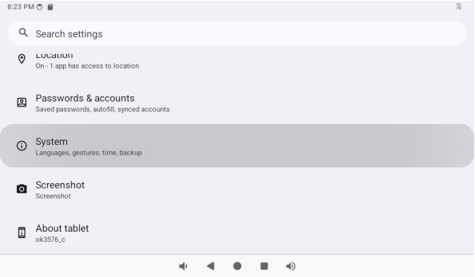
Click “Reset Options”.
Select the data to be reset according to the actual situation, wait for OK3576 to restore the default factory settings, and do not power off during the process of restoring the factory settings.
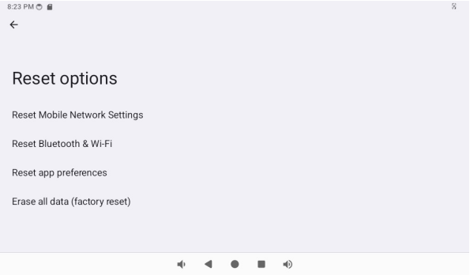
3.23 APK Installation With TF Card
Copy the APK file to the TF card and open the TF card directory in the File app according to the previous section.
Click on the APK file, the window will pop up, click on “Settings”
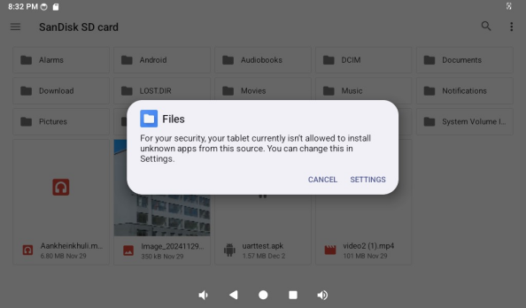
Allow apps from this source.
3.24 ROOT Permission Test
Open the “Settings” app in the app drawer interface and click “About Tablet”.
Click “Build” 7 times in a row.
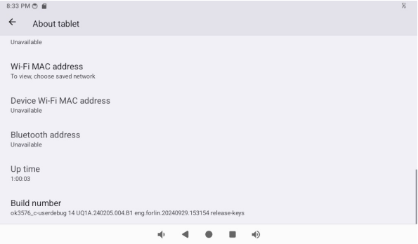
Return to the previous menu and click “System”.
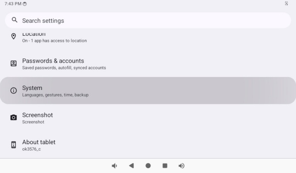
Click “Developer Options”.
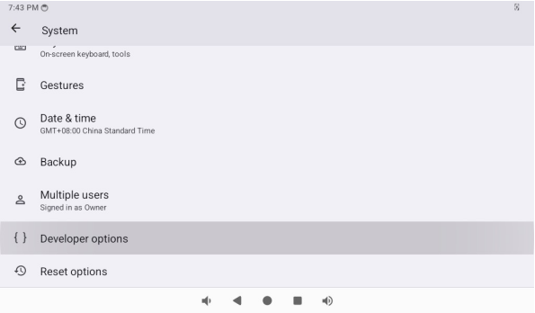
Locate Root Authorization.
This switch controls root privileges including the following:
Serial port interrupt su to get root permission;
ADB root to get root privileges;
System app to get root privileges.
Open the RootChecker “app in the application drawer to test whether system app can get root privileges.
3.25 Locking Screen Test
Note: OK3576 does not lock the screen by default.
Open “Settings” in the app drawer and click “Security & Privacy”.
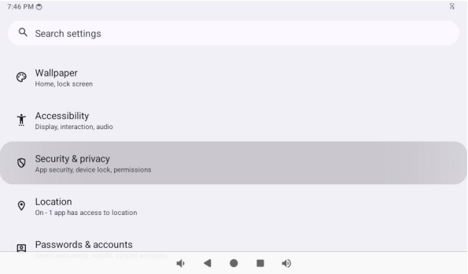
Click “Device Unlock”.
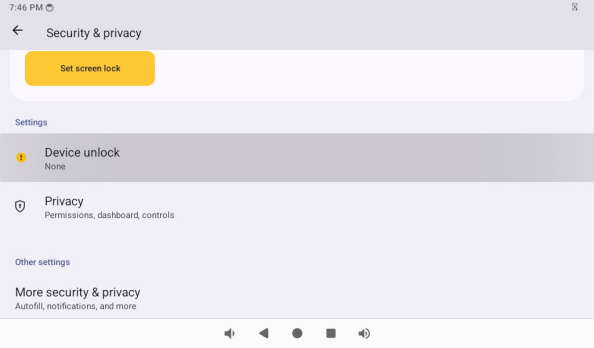
Tap “Screen Lock”.

3.26 CAN Test
OK3576-C has two can buses and supports CANFD.
Parameters related to can can be set in the “Settings” app or through the “can” app.
Open “Settings” in the application drawer and click “Network and Internet”.
Click “CAN“.
Set the baud rate for can0 and can1.
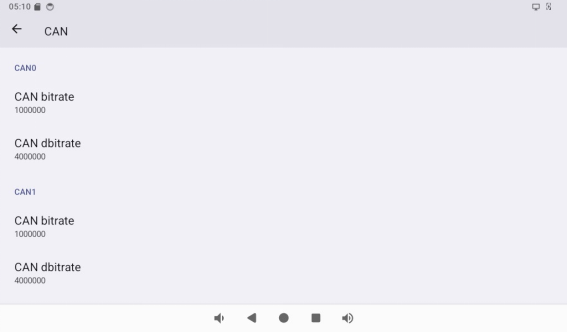
Short H and L of can0 and can1, respectively.
Open the “can” app in the app drawer.
Click “SETTING” to set can parameters, and then click “CAN _ ON” to open can.
At this time, execute the cangen command (root permission is required) on the command line terminal to see the data in the app.
console:/ # cangen -vv -n 5 can1
can1 720 [1] 50
can1 3A9 [5] F0 83 11 7A C0
can1 497 [7] 6E 47 E2 7D F2 82 A1
can1 58A [8] F4 52 01 19 37 A5 2B 18
can1 778 [4] 0D 0D 59 32
Execute the candump command at the command line terminal, enter hexadecimal data in the text box below the app, and then click SEND to send. At this time, the data can be received at the command line terminal.
console:/ # candump can1
can1 123 [8] 12 34 56 78 12 34 56 78
can1 123 [8] 12 34 56 78 12 34 56 78
can1 123 [8] 12 34 56 78 12 34 56 78
3.27 Watchdog Test
Open the WatchdogTest “app in the Applications Drawer.
Set the timeout time, click “Start”to start the watchdog, and click “Feed” to feed the dog. If the dog is not fed within the timeout time, the development board will restart.
3.28 ADC Test
Open “Settings” in the app drawer and click “Security & Privacy”.
3.29 GPIO Test
The gpio of OK3576-C is divided into CPU direct connection and extended IO.
CPU Direct IO is named as GPIOx _ YZ (X = 0,1,2,3,4, y = A, B, C, D, Z = 0,1,2,3,4,5,6,7)
pin_number=x*32 + (y-‘A’)*8 + z
The extended IO is named Pxy form (X = 0,1,2, y = 0,1,2,3,4,5,6,7)
pin_number = 485 + x*8 + y
e.g.:
GPIO1_D5（CPU direct connect）
pin_number = 1*_32 + (D-A) + 5 = 1_32 + 3*8 + 5 = 61
P12（Extended）
pin_number = 485 + 1 * 8 + 2 = 495
Open the GPIOTest “app in the application drawer, enter the calculated pin _ number in the pin number text box, click Open to open the GPIO, and then you can read or set it to 1 and clear it to 0.
3.30 Uboot Menu
Open the “UbootMenu” app “in the application drawer to set functions such as screen switch, home screen, dpi, etc.
3.31 Silent Installation
Open the SilentInstallDemo “app in the applications drawer, click the install silent button to install silently “/storage/emulated/0/Android/data/com. forlinx. Silent InstallDemo/files/test. apk” APK needs to be placed in this location in advance. “. Users can modify the source code of SilentInstallDemo to achieve silent installation.
4. System Flashing
4.1 OTG System Flashing
4.1.1 OTG Driver Installation
Path: 3-Tools \ DriverAssitant_v5.13.zip
Extract the above path file to any directory and run it with administrator privileges.
Open DriverInstall.exe.
Click “Driver Installation”.
4.1.2 OTG Flashing Test
4.1.2.1 RKDevTool Flashing Test
Path: 3-Tools \ RKDevTool_v3.30_for_window.zip
It is a development tool provided by Rockchip Micro. Unzip it to a full English path before use, connect the Typc0 port of the development board and the host computer with a Type-C cable, press and hold the recovery key of the development board and don’t release it, then press the reset key to reset the system, and release the recovery key after about two seconds. There will be prompts on the Rockchip development tool : loader device found
Note: To recognize the device, the recovery button on the development board should be pressed down while the board is powered on. Theoretically, Rockchip development tools have no requirements for the unzip directory. However, some users have feedback that the unzip directory should be in full English. If the tool doesn’t match the following figure, please consider unzipping it in an English directory.
Open the Rockchip development tool:

Click the “Upgrade Firmware” tab, click the “Firmware” button to select the full upgrade image update.img. The program will be parsing the firmware, so wait a while.
Click “Advanced Functions”-> “Erase All” to erase.
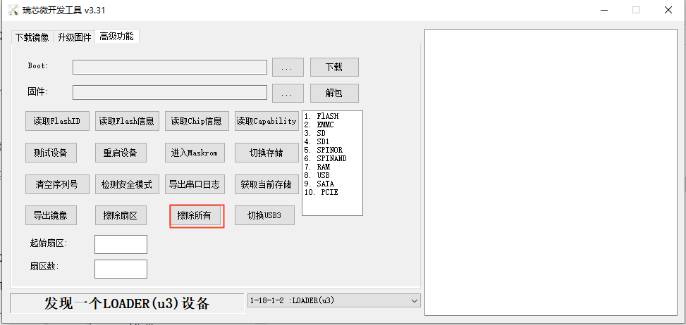
Click the “Upgrade Firmware” button-> “Upgrade” to upgrade.

Introduction to MASKROM mode
If the loader is damaged and cannot enter the Loader mode, press and hold the red Maskrom key and then press the reset key to enter the maskrom mode for flashing.
At this time, the system will prompt the discovery of a maskrom device. The flashing process is consistent with the loader mode, so it is best to use an update.img burning.
Note: Don’t click “Device Partition Table” in maskrom mode, it is invalid. A separate flash in maskrom mode will not clear the UBOOT environment variables.
Introduction to Downloading the Individual Image Function
This feature is useful when you need to download a separate image. This function is only applicable in loader flashing mode.
Click ① Download image tab;
Click ② Device partition table to read the mirror partition location;
Click the ③ check box to select the image to be flashed separately;
Click ④Here to select a image;
Click ⑤ to execute for flashing;
Restart after flashing.
4.1.2.2 Factory Tool Flashing Test
Factory Tool is a factory batch OTG flashing tool, which does not need to read the image and supports large file flashing. Use this tool if RKDevTool is not compatible. Before use, you need to decompress to the full English path, connect the development board to the host, press the recovery key, press the reset key to reset, and release the recovery key after two seconds. There will be prompts on the Rockchip development tool : loader device found
Note: To recognize the device, the recovery button on the development board should be pressed down while the board is powered on. Theoretically, Rockchip development tools have no requirements for the unzip directory. However, some users have feedback that the unzip directory should be in full English. If the tool doesn’t match the following figure, please consider unzipping it in an English directory.
Click to select the firmware, and click to start. At this time to recognize the loader device will automatically start burning.
4.2 TF Card Flashing
TF card production, flashing and testing
Note: The tested TF card capacity is up to 16G, using 32G and above TF card may fail to burn.
Copy SDDiskTool_v1.69.zip from the user profile tools directory to any directory on windows. Run SD_Firmware_Tool.exe with administrator privileges.
Select the disk device, check “Firmware Upgrade” and select update.img. Click Start Creating.
Insert the TF card into the development board and start, the system will automatically enter the flashing process. When the flashing is complete, both the screen and the serial port will prompt:
Please remove SD CARD!!!, wait for reboot.
At this time, pull out the TF card, the system automatically restarts (please do not power down directly).
During mass production, check the flashing status by SoM heartbeat light. Heartbeat light modes are as follows:
1. Kernel startup phase: heartbeat light mode, regular intermittent blinking;
2. Flashing preparation phase: EMMC indicator (off);
3. Flashing phase:EMMC indicator (on);
4. Flashing completion phase: Regular intermittent blinking.
If the automatic restart does not occur after removing the TF card, a manual restart can also complete the burning. Please be patient during the burning process.
5. System OTA Upgrade Test
OTA (over the air) upgrade is a standard software upgrade method provided by Android system. It has powerful functions, and the current version of system OTA upgrade provides two methods of local complete package upgrade and network upgrade.
OTA upgrade package is divided into full upgrade package and incremental upgrade package. The full upgrade package is the complete system, and the incremental upgrade package is the difference package of V2.0 system relative to V1.0 system, which requires the device system to be V1.0 to use this incremental package to upgrade to V2.0.
Refer to the “OK3576-C_Android14_User’s Compilation Manual” for compilation.
OK3576-C 2GB memory version may fail due to insufficient memory, it is recommended that users appropriately trim system services.
5.1 OTA Upgrade
Copy the compiled upgrade package to the root directory of USB, TF card, or /storage/emulated/0 directory, the system will automatically detect it and pop up the upgrade dialog box.
The following is done in adb mode:
adb root
adb remount
adb push ok3576_c-ota-eng.root.zip /storage/emulated/0/update.zip
After uploading the upgrade package using ADB, it is necessary to restart the development board to trigger the system to detect the upgrade package.
Click “Installation”.

The debugging window prints the following information:
After that, it will automatically restart and enter the Recovery system to automatically complete the OTA package upgrade. At this time, it cannot be powered off and wait for the upgrade.
When completed, it will automatically restart to the main Android interface.
After the system restarts, a dialog box pops up on the interface to prompt congratulations on the success of the upgrade.
Click “Yes”.
Finally, you can verify that the android system has been modified.
Note: After the system restarts, the prompt to perform a firmware upgrade is a normal prompt. Since the update.zip file exists, the system will pop up a prompt after waiting for a few minutes. After deleting the update.zip file, the firmware upgrade prompt dialog box will no longer appear.